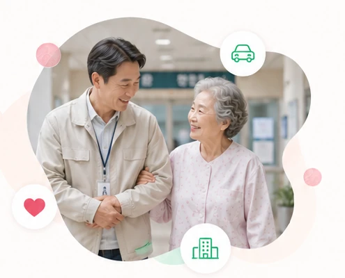

병원동행 파트너 모집
이동비 부담까지 줄이는
이동비 부담까지 줄이는
병원동행
조합 차량으로 집에서 병원까지,
진료 후 귀가까지 함께합니다.
이동과 병원동행을 하나로 연결해
이용자의 추가 교통비 부담을 줄입니다.

나눔이음이 다른 이유동행료에 교통비까지,
동행료에 교통비까지,
왜 따로 부담해야 할까요?
대중교통·택시로 함께 이동하는 방식은 이용자와 동행인의 교통비가 별도로 들 수 있습니다.
일반적인 동행 방식대중교통·택시로
대중교통·택시로
함께 이동
동행 서비스 비용과 별도로
이용자·동행인의 교통비가 추가될 수 있습니다.
나눔이음조합 차량으로
조합 차량으로
이동부터 동행까지
집에서 병원, 귀가까지 함께 이동해
추가 교통비 부담을 줄입니다.
함께하는 지원
처음부터
처음부터
활동까지 함께 지원
가입·교육·업무 안내·정산까지,
혼자 준비하지 않아도 됩니다.
조합원 파트너는 플랫폼 수수료 없이 활동하고, 가능한 예약만 직접 선택합니다.
ONBOARDING걱정 없이
시작하세요
시작하세요
병원동행 파트너가 하는 일이동과 동행을
이동과 동행을
한 사람이 이어갑니다
집에서 조합 차량으로 출발해 병원 이동·접수·진료·귀가까지
하나의 흐름으로 함께합니다.
집에서 출발
조합 차량으로 이용자를 만나 출발합니다.
병원 이동
대중교통 환승 없이 병원까지 함께 이동합니다.
접수·진료 동행
접수·검사·진료 이동을 곁에서 돕습니다.
귀가 동행
진료가 끝나면 조합 차량으로 다시 집까지 모십니다.
내 일정은 내가 선택해요
내가 선택하는 일정
일이 들어오면 먼저 확인하고,
원하는 예약만 선택합니다.
CAL
가능
예약중
가능
가능
나눔이음의 이동 구조교통비 부담은 줄이고,
교통비 부담은 줄이고,
이동은 한 번에
이용자와 동행인이 대중교통·택시비를 각각 부담하는 대신,
조합 차량으로 함께 이동합니다.
CO-OP VEHICLE집에서 병원,
다시 집까지
다시 집까지
추가 교통비 부담 완화
이용자·동행인의 별도 이동비 부담을 줄입니다.
이동 + 동행 한 번에
차량 이동과 병원동행을 하나의 서비스로 제공합니다.
집에서 바로 출발
병원 앞에서 만나는 것이 아니라 이용자의 집에서 시작합니다.
귀가까지 연결
진료가 끝난 뒤에도 조합 차량으로 집까지 함께합니다.
우리는 이렇게 함께합니다
지원부터 활동까지 한눈에
지원부터 교육, 일정 선택, 실제 동행과 정산까지 순서대로 진행합니다.
START